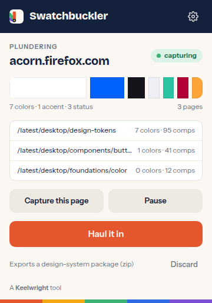

Swatchbuckler
Plunder any site's design system. Browse a site, and Swatchbuckler captures its colors, type, spacing, radii, shadows and components, then hauls it all in as design tokens, a style guide, and a package ready for Claude or your own code.
How it works
1. Start plundering. Open the site, click the Swatchbuckler icon and start a session. The page you're on is captured right away.
2. Browse. Every page you visit on that site while the session runs is captured and merged: colors weighted by how much of the screen they cover, fonts and sizes by where they're used, components recognized by role and shape. Pause any time.
3. Haul it in. One click builds the whole package in the background and downloads a zip. Nothing is uploaded anywhere; the build runs inside the extension.
What you get
The haul has the same shape for every site, so what you learn from one you can reuse on the next:
Site/ style guide: index.html, tokens.css, typography.css,
components.css, animations.css, prompt.md, components/
site/artifact/ a starter template for Claude Artifacts
site/code/ DESIGN.md, tailwind.theme.js, tokens.css, palette.md
site/design-system/project/ content for a Claude Design System artifact
tokens/site/ W3C design tokens: primitives, semantic light/dark,
components, charts, motion, brand
report.md what was observed, what was derived, and how confident
capture.json the raw per-page capture (optional)Every token carries a confidence score, and anything Swatchbuckler had to infer rather than observe is flagged as derived, so you always know which values to trust and which to check.

Privacy, in one paragraph
Swatchbuckler reads the pages you choose to capture and keeps what it finds in your browser's extension storage until you export it. It makes no network requests, has no accounts, no analytics and no telemetry. The full policy lists every permission it asks for and why.
Made for Claude, useful everywhere
The package is laid out to drop straight into a Claude Design System artifact, an Artifact template, or a DESIGN.md for Claude Code. It's also just CSS, JSON and Markdown, so any tool that reads design tokens can use it.
Coming to the stores.
Swatchbuckler is in development. When it ships, it will be listed on Firefox Add-ons, the Chrome Web Store and the Mac App Store under Keelwright Studio. Until then, the source builds for all three browsers; write to hello@keelwright.dev if you'd like to try it early.